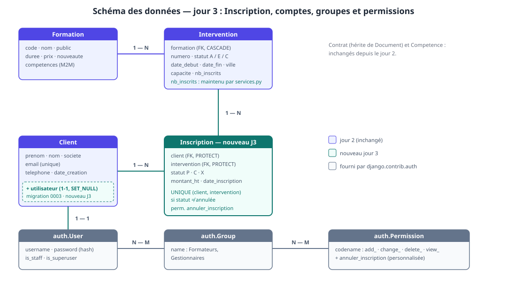
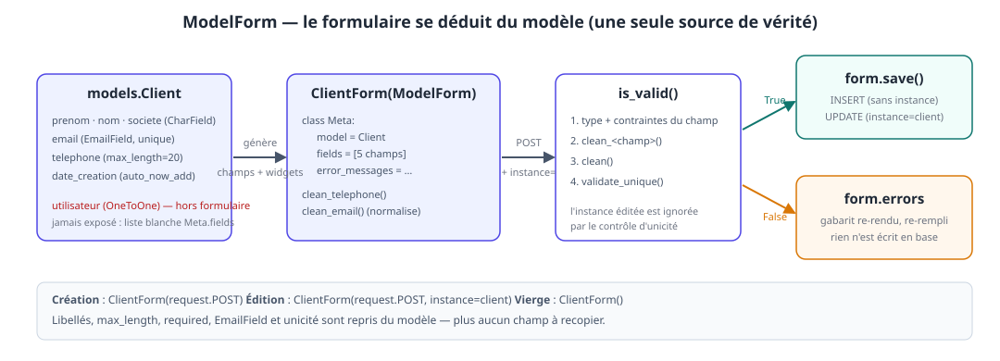
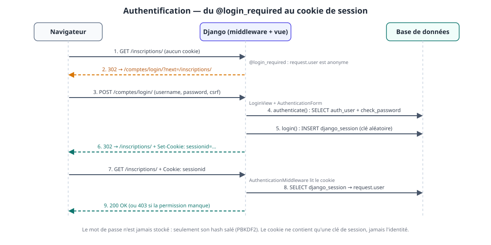
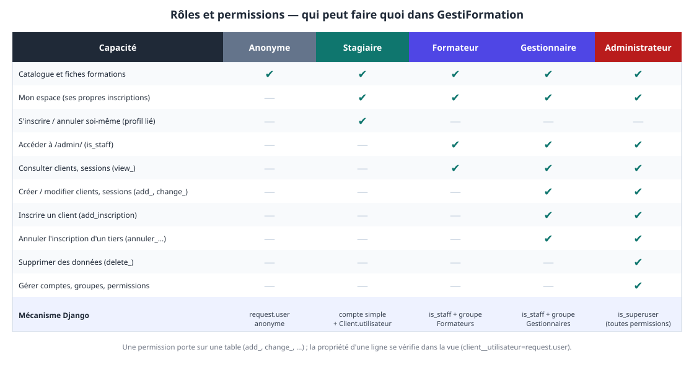

À la fin de la journée, les participants sont capables de :
- remplacer un
forms.Formécrit à la main par unModelForm:Meta.model,Meta.fields,instance=,save(),save(commit=False); - écrire un CRUD complet (créer, modifier, supprimer) avec le pattern POST/redirect/GET et le framework de messages ;
- introduire un nouveau modèle métier (
Inscription) et en protéger les règles (capacité, doublon) dans une couche de services transactionnelle ; - configurer l'administration :
ModelAdmin,list_display, filtres, recherche, inlines, actions, champs en lecture seule ; - expliquer ce que l'admin contourne (vues, formulaires) et comment garder les règles métier à un seul endroit ;
- mettre en place l'authentification : connexion, déconnexion, création de compte, interventions, mots de passe hachés ;
- protéger les vues (
@login_required,@permission_required) et les gabarits (user,perms) ; - distinguer permission (portée sur une table) et propriété (portée sur une ligne) et empêcher l'accès aux données d'autrui ;
- construire des groupes (Formateurs, Gestionnaires) et une permission personnalisée.
Livrable de la journée
Inscription(modèle + migration + service) et formulaire d'inscription d'un client à une intervention ;- CRUD des clients par
ModelForm, avec messages de confirmation et suppression protégée ; - administration complète des 6 modèles (inlines, actions, filtres, recherche) ;
- comptes : connexion, déconnexion, création de compte, page Mon espace ;
- 3 rôles + administrateur : stagiaire, formateur, gestionnaire ; permission
annuler_inscription; - les pages publiques du jour 1 (accueil, catalogue, détail) toujours accessibles à tous, mêmes URLs.
💡 Fil conducteur : au jour 2, on a rendu le site persistant ; aujourd'hui on le rend exploitable (on écrit sans recopier), administrable (un back-office sans le coder) et sûr (chaque page sait qui la demande). Chaque bloc protège le précédent : le B9 protège ce que le B7 a écrit et ce que le B8 expose.
| Heure | Séquence | Blocs programme |
|---|---|---|
| 09h00 – 09h15 | Reprise du J2 : check, migrate, seed, serveur, commit |
— |
| 09h15 – 11h00 | B7 — ModelForms, CRUD clients, modèle Inscription |
Bloc 7 |
| 11h00 – 11h15 | Pause | |
| 11h15 – 12h45 | B8 — L'administration Django | Bloc 8 |
| 12h45 – 13h45 | Déjeuner | |
| 13h45 – 16h15 | B9 — Authentification, groupes, permissions + atelier « Mon espace » | Bloc 9 |
| 16h15 – 16h30 | Pause | |
| 16h30 – 17h00 | Démonstrations, synthèse, preview du jour 4 | — |
Le schéma de la journée

Trois ajouts au schéma du jour 2 : le modèle Inscription (la relation Client ↔ Intervention volontairement laissée en blanc hier), le lien Client.utilisateur (un compte peut être rattaché à un client) et les tables auth fournies par Django (User, Group, Permission).
7.1. Le problème qu'on a créé hier
Le formulaire du jour 2 recopiait le modèle :
# J2 — forms.py : 5 champs recopiés de models.Client
prenom = forms.CharField(label='Prénom', max_length=60)
email = forms.EmailField(label='E-mail')
...
# J2 — views.py : le couplage « formulaire = colonnes »
Client.objects.create(**form.cleaned_data)
Trois dettes, qui grossissent à chaque nouveau champ :
| Dette | Conséquence |
|---|---|
libellé, max_length, required écrits deux fois |
models.py et forms.py divergent au premier changement |
unicité de l'e-mail recodée à la main (clean_email) |
un oubli = un doublon en base ou un IntegrityError |
pas de modification : create() ne sait que créer |
il faudrait un second formulaire, ou un update écrit à la main |
Le ModelForm supprime les trois : il génère les champs depuis le modèle, valide l'unicité, et sait créer ou modifier selon qu'on lui donne une instance.

forms.Form (J2) |
forms.ModelForm (J3) |
|
|---|---|---|
| Champs | déclarés un par un | déduits de Meta.model + Meta.fields |
Libellés / max_length / required |
à redéclarer | repris du modèle |
Unicité (unique=True) |
clean_<champ> à la main |
automatique (validate_unique) |
| Enregistrement | Client.objects.create(**cleaned_data) |
form.save() |
| Modification | à écrire | instance=client — save() fait un UPDATE |
| Quand l'utiliser | formulaire sans modèle (recherche, contact) | formulaire qui écrit un modèle |
💡 Règle de la semaine : si le formulaire écrit dans une table, c'est un
ModelForm.forms.Formreste pour les saisies qui ne sont pas des lignes de table (recherche, filtre, contact).
7.2. ClientForm — le formulaire de référence
# catalog/forms.py
class ClientForm(forms.ModelForm):
"""
remplace NouveauClientForm et aussi la MAJ
"""
class Meta:
model = Client
# champs à afficher (liste blanche)
fields = ['prenom', 'nom', 'societe', 'email', 'telephone']
widgets = {
'prenom': forms.TextInput(attrs={'placeholder': 'Entrez votre prénom ici...'})
}
error_messages = {
'email': {'unique': 'Un client existe déjà avec cet e-mail.'}
}
def clean_email(self):
"""
le check a été au niveau du modèle Mais on peut normaliser !
"""
return self.cleaned_data.get('email', '').lower()
def clean_telephone(self):
valeur = self.cleaned_data.get('telephone', '')
if valeur and not re.fullmatch(r"[\d\s+]{8,20}", valeur):
raise ValidationError("Format invalide - chiffres, espace et + attendu.")
return valeur
Ce qui a disparu par rapport à J2 : les 5 déclarations de champs, clean_email qui interrogeait la base, le clean() de démonstration. Ce qui reste : les règles qui n'existent pas dans le modèle (clean_telephone) — un ModelForm s'enrichit, il ne se limite pas à ce que le modèle sait dire.
L'ordre de validation d'un ModelForm est à connaître, car il explique clean_email :
- chaque champ : conversion + contraintes issues du modèle (
max_length,required, format e-mail) ; - chaque
clean_<champ>(); clean()du formulaire ;validate_unique()du modèle — après lesclean_*. C'est pourquoiclean_emailmet l'adresse en minuscules : l'unicité est vérifiée sur la valeur normalisée.
⚠️ Piège n°22 —
fields = '__all__'(ouexclude) : pratique, et dangereux. Le jour oùClientgagne un champ sensible — dès B9 :utilisateur— il devient modifiable par n'importe quel visiteur qui forge unPOSTavec ce nom de champ (mass assignment, OWASP A01). On écrit toujours la liste blanche explicitefields = [...].
7.3. Le CRUD des clients
Trois vues, un gabarit. On garde la structure du J2 (GET affiche, POST valide, redirect après succès) ; seul instance= distingue création et modification.
# catalog/views.py — extrait J3 (les gardes d'accès arrivent en B9)
def nouveau_client(request):
if request.method == 'POST':
form = ClientForm(request.POST)
if form.is_valid():
# ici forme CONTIENT un objet Modèle !!! qui peut utiliser save() --> create et/ ou update
client = form.save()
return redirect('catalog:clients')
else:
form = ClientForm()
# à partir de deux vues qui pourraient utiliser le template GENERIQUE form.html
# on a besoin de variabiliser d'autres éléments
return render(request, 'catalog/form.html', {
'form': form,
'titre': 'Nouveau client',
'retour': 'catalog:clients'
})
def modifier_client(request, pk):
client = get_object_or_404(Client, pk=pk)
if request.method == 'POST':
form = ClientForm(request.POST, instance=client) # ← la seule différence
if form.is_valid():
form.save()
messages.success(request, f'Client « {client} » modifié.')
return redirect('catalog:clients')
else:
form = ClientForm(instance=client) # pré-rempli
return render(request, 'catalog/form.html', {
'form': form, 'titre': f'Modifier {client}', 'retour': 'catalog:clients',
})
def supprimer_client(request, pk: int):
client = get_object_or_404(Client, pk=pk)
if request.method == 'POST':
# si le modèle utilise une relation avec contrainte RESTRICT ou PROTECTED en python
try:
client.delete()
except ProtectedError:
messages.error(request, 'Suppression impossible : ce client a des contrats ou des inscriptions.')
# else adossé à try/except garantit que le try s'est exécuté jusqu'ou bout ==> pas d'erreur
else:
messages.success(request, f'Client « {client} » supprimé.')
return redirect('catalog:clients')
return render(request, 'catalog/confirmer_suppression.html', {
'objet': client, 'retour': 'catalog:clients',
})
liste_clients (J2) est inchangée. Les URLs, le plus spécifique d'abord (rappel piège n°2) :
# catalog/urls.py — ajouts J3
path('clients/', views.liste_clients, name="clients"),
path('clients/nouveau/', views.nouveau_client, name="nouveau-client"),
path('clients/<int:pk>/modifier/', views.modifier_client, name='modifier-client'),
path('clients/<int:pk>/supprimer', views.supprimer_client, name="supprimer-client")
Trois points à faire nommer :
instance=client: sans lui,ClientForm(request.POST)crée un second client — ou échoue sur l'unicité de l'e-mail. Avec lui,save()exécute unUPDATEet le contrôle d'unicité ignore la ligne en cours d'édition ;- la suppression passe par un
POST(page de confirmation, puis formulaire). UnGETqui supprime serait déclenchable par une simple balise<img src=…>sur un autre site — voir le CSRF du jour 2 ; ProtectedError:Contrat.clientestPROTECT(jour 2, piège n°10). Sans letry/except, le visiteur reçoit une 500 ; avec, un message clair. C'est la démonstration queon_deleteest une décision métier.
⚠️ Piège n°23 — oublier
instance=côtéPOST: l'affichage est pré-rempli (ClientForm(instance=client)), l'envoi crée un doublon (ClientForm(request.POST)). Les deux branches duifdoivent recevoir l'instance.
Les messages — le pont entre la vue qui redirige et la page qui s'affiche ensuite. django.contrib.messages est déjà installé (middleware + context processor du settings.py généré au jour 1). Les messages vivent dans la intervention jusqu'à leur affichage.
{# catalog/base.html — ajout, juste avant {% block contenu %} #}
{# messages continer des messages flash quand ils ont été déclenchés #}
{% if messages %}
<ul class="messages">
{% for message in messages %}
<li class="{{ message.tags }}">{{ message }}</li>
{% endfor %}
</ul>
{% endif %}
Le gabarit de formulaire devient générique. C'est le troisième formulaire de l'application : on factorise (form_client.html du jour 2 est remplacé).
{# catalog/templates/catalog/_champs.html — le rendu des champs, partagé #}
{% if form.non_field_errors %}
<ul class="erreurs">{% for e in form.non_field_errors %}<li>{{ e }}</li>{% endfor %}</ul>
{% endif %}
{% for field in form %}
<div class="champ {{ field.name }}{% if field.errors %} champ-erreur{% endif %}">
{{ field.label_tag }}
{{ field }}
{% if field.help_text %}<small class="aide">{{ field.help_text }}</small>{% endif %}
{% for e in field.errors %}<span class="erreur">{{ e }}</span>{% endfor %}
</div>
{% endfor %}
{# catalog/templates/catalog/form.html #}
{% extends "catalog/base.html" %}
{% block titre %}{{ titre }} — GestiFormation{% endblock %}
{% block contenu %}
<section class="formulaire">
<p class="retour"><a href="{% url retour %}">← Retour</a></p>
<h1>{{ titre }}</h1>
<form method="post" class="form">
{% csrf_token %}
{% include "catalog/_champs.html" %}
<button type="submit" class="btn">Enregistrer</button>
</form>
</section>
{% endblock %}
{# catalog/templates/catalog/confirmer_suppression.html #}
{% extends "catalog/base.html" %}
{% block titre %}Confirmer la suppression — GestiFormation{% endblock %}
{% block contenu %}
<section class="formulaire">
<h1>Supprimer « {{ objet }} » ?</h1>
<p>Cette action est définitive.</p>
<form method="post">
{% csrf_token %}
<button type="submit" class="btn btn-danger">Oui, supprimer</button>
<a class="btn" href="{% url retour %}">Annuler</a>
</form>
</section>
{% endblock %}
Dans liste_clients.html, une colonne d'actions par ligne :
<td>
<a href="{% url 'catalog:modifier-client' c.pk %}">Modifier</a> ·
<a href="{% url 'catalog:supprimer-client' c.pk %}">Supprimer</a>
</td>
Quelques lignes de CSS pour les messages, à ajouter à static/css/base.css :
.messages { list-style: none; padding: 0; margin: 1rem 0; }
.messages li { padding: .6rem 1rem; border-radius: 6px; margin-bottom: .5rem; }
.messages .success { background: #ecfdf5; color: #065f46; }
.messages .error { background: #fef2f2; color: #991b1b; }
.btn-danger { background: #b91c1c; }
form.inline { display: inline; }
.lien { background: none; border: 0; padding: 0; font: inherit; color: inherit; text-decoration: underline; cursor: pointer; }
7.4. save(commit=False) — compléter avant d'écrire
form.save() fait deux choses : construire l'objet et l'écrire. save(commit=False) ne fait que la première — on récupère l'instance, on la complète avec ce que le formulaire ne porte pas, puis on écrit.
objet = form.save(commit=False) # instance construite, rien en base
objet.cree_par = request.user # ce qu'aucun champ du formulaire ne fournit
objet.save()
form.save_m2m() # ⚠️ obligatoire si le formulaire a des ManyToMany
⚠️ Piège n°24 —
commit=Falseet lesManyToMany: sansform.save_m2m(), les relations M2M saisies sont perdues silencieusement (la ligne principale est écrite, pas la table intermédiaire). On le retrouvera avecFormation.competencessi on écrit unFormationForm.
On l'utilisera en B9 (création de compte). En B7, pour les inscriptions, la règle métier est plus riche qu'un champ à compléter — elle a besoin d'une couche à part.
7.5. Aperçu : les vues génériques
Le triptyque « afficher / valider / enregistrer / rediriger » est si courant que Django le fournit sous forme de vues basées sur des classes (CreateView, UpdateView, DeleteView). modifier_client s'écrit alors :
from django.urls import reverse_lazy
from django.views.generic import UpdateView
class ClientUpdateView(
SuccessMessageMixin,
UpdateView):
"""
contrepartie en POO de la fonction "modifier_client"
avec comportement génériques
- model, form_class, template_name, success_url
avec customisation directe
- get_context_data
avec customisation indirecte avec des Mixins
== classe auxiliaire à ajouter en héritage multiple !
- SuccessMessageMixin.get_success_message
"""
model = Client
form_class = ClientForm
template_name = 'catalog/form.html'
# -----------> l'url sera redirigée si le formulaire est validé
success_url = reverse_lazy('catalog:clients')
def get_context_data(self, **kwargs):
"""
customisation du contexte pour être compatible avec le template !!
"""
# super() charge le form dans contexte !
context = super().get_context_data(**kwargs)
# ----------------------------> l'objet instancié (client) !
context["titre"] = f'Modifier {self.get_object()}'
context["retour"] = 'catalog:clients'
return context
def get_success_message(self, cleaned_data):
"""
méthode héritée de la Mixin SuccessMessageMixin
pour gérer les messages en succès
"""
return f'Client « {self.get_object()} » modifié.'
path('clients/<int:pk>/modifier/', ???, name='modifier-client'),
| Vue fonctionnelle (référence du cours) | Vue générique |
|---|---|
nouveau_client |
CreateView |
modifier_client |
UpdateView |
supprimer_client |
DeleteView |
liste_clients |
ListView |
detail_formation |
DetailView |
💡 Pourquoi on reste en fonctions : la vue fonctionnelle montre chaque étape (méthode HTTP, validation, redirection) ; la générique la cache. On apprend avec la première, on gagne du temps avec la seconde — le jour où l'on a compris ce qu'elle cache. Les contraintes d'accès de B9 ont leur équivalent en classes (
LoginRequiredMixin,PermissionRequiredMixin).
🛠️ Atelier 7·a — Le CRUD clients en ModelForm (45 min)
- remplacer
NouveauClientFormparClientFormdanscatalog/forms.py; - écrire les 3 vues, les 2 URLs ajoutées,
form.html,_champs.html,confirmer_suppression.html; supprimerform_client.html; - brancher le bloc
messagesdansbase.html, la colonne « Actions » dansliste_clients.html; - dérouler la table de contrôle :
| # | Action | Résultat attendu |
|---|---|---|
| 1 | créer un client avec l'e-mail M.Dupont@ACME.fr |
erreur « Un client existe déjà… » (normalisé en minuscules avant l'unicité) |
| 2 | créer un client valide | redirection /clients/ + message vert |
| 3 | modifier ce client sans changer l'e-mail | enregistré — l'unicité ignore la ligne éditée |
| 4 | modifier ce client avec l'e-mail d'un autre | erreur d'unicité |
| 5 | ouvrir /clients/<pk>/modifier/ |
formulaire pré-rempli |
| 6 | supprimer le client créé à l'étape 2 | supprimé, message vert |
| 7 | supprimer Marie Dupont (seed, a un contrat) | message rouge, pas de 500 |
| 8 | ouvrir /clients/<pk>/supprimer/ en GET |
page de confirmation, rien de supprimé |
Checklist :
- [ ] les 8 cas passés, le binôme capable d'expliquer le cas 3 (pourquoi pas d'erreur d'unicité) ;
- [ ]
forms.pyne contient plus aucune déclaration de champ pourClient; - [ ]
git add -A && git commit -m "J3 : CRUD clients en ModelForm + messages"fait.
7.6. Inscription — le modèle manquant
Le jour 2 avait laissé Client ↔ Intervention en blanc, avec un compteur stocké Intervention.nb_inscrits. Voici la relation, enfin modélisée.
# catalog/models.py — ajout J3
from django.db.models import Q
class Inscription(models.Model):
"""Un client inscrit à une intervention — la table de liaison porte ses propres données."""
STATUTS = [
('P', 'En attente'),
('C', 'Confirmée'),
('X', 'Annulée'),
]
statut = models.CharField('statut', max_length=1, default="P", choices=STATUTS)
montant_ht = models.DecimalField('montant HT (€)', max_digits=10, decimal_places=2)
date_inscription = models.DateTimeField('inscrit le', auto_now_add=True)
client = models.ForeignKey(
Client, on_delete=models.PROTECT, related_name='inscriptions', verbose_name='client'
)
intervention = models.ForeignKey(
Intervention, on_delete=models.PROTECT, related_name='inscriptions', verbose_name='intervention',
)
class Meta:
verbose_name = 'inscription'
# ---------> - : décroissant
ordering = ['-date_inscription']
## contraintes composites impossible d'exprimer dans un champs
constraints = [
models.UniqueConstraint(
fields=["client", "intervention"],
# la contrainte est assurée si l'inscription n'est pas annulée (non statut X)
# métier: un client peut annuler et ensuite se réinscrire !!!!
condition=~Q(statut='X'),
name='inscription_unique_client_intervention_active',
)
]
def __str__(self):
return f"{self.client} --> {self.intervention}"
Quatre choix à justifier :
| Choix | Pourquoi |
|---|---|
table de liaison explicite plutôt qu'un ManyToManyField |
l'inscription a ses propres données (statut, montant, date) |
on_delete=PROTECT des deux côtés |
on ne perd pas l'historique ; supprimer une Formation qui a des inscriptions est bloqué en cascade (Formation → Intervention → Inscription) |
montant_ht copié depuis la formation |
le prix d'aujourd'hui ne doit pas réécrire la facture d'hier |
UniqueConstraint conditionnelle |
un client peut se réinscrire après une annulation, jamais deux inscriptions actives |
Meta.permissions déclare une permission personnalisée en plus des quatre créées d'office (add_, change_, delete_, view_) — elle servira en B8 et B9.
python manage.py makemigrations # → 0002_inscription.py
python manage.py sqlmigrate catalog 0002 # lire : CREATE UNIQUE INDEX … WHERE NOT (statut = 'X')
python manage.py migrate
💡 Lire l'index partiel :
sqlmigratemontre unCREATE UNIQUE INDEX … WHERE …: la contrainte vit dans la base, pas seulement dans Python. Même un script qui contourne l'application ne créera pas de doublon actif.
La règle métier — catalog/services.py. L'inscription n'est pas un simple create() : il faut vérifier la place, incrémenter le compteur, refuser le doublon, de façon atomique. Cette logique a deux appelants (le formulaire du back-office, et en B9 le bouton « S'inscrire » du stagiaire) ; elle vit donc dans un module à part, pas dans une vue.
# catalog/services.py
from django.db import transaction
from django.db.models import F, Q
from .models import Inscription, Intervention, Client
class DejaInscrit(Exception):
def __init__(self, cl, inter):
self.cl = cl
self.inter = inter
def __str__(self):
return f"client: {self.cl} est déjà été inscrit à l'intervention: {self.inter}"
class InterventionComplete(Exception):
def __init__(self, inter):
self.inter = inter
def __str__(self):
return f"plus de places sur l'intervention: {self.inter} !!"
@transaction.atomic
def inscrire(client: Client, intervention: Intervention):
"""
on inscrit si
- le client n'est pas déjà inscrit !!!
- s'il ya des places dispo !!!
dans ce cas on met à jour les nb_inscrits de l'intervention
dans ce cas on créé une inscription
"""
# if Inscription.objects.filter(
# Q(client=client) &
# Q(intervention=intervention) &
# ~Q(statut='X')
# ).exists():
# exclude (NAND) != filter (AND)
if Inscription.objects.filter(
client=client, intervention=intervention
).exclude(statut='X'):
raise DejaInscrit(client, intervention)
# 1. retourne l'intervention s'il ya des places dispo OU QuerySet vide
# 2. s'il ya intervention : on incrémente les places dispo
places_prises = Intervention.objects.filter(
pk=intervention.pk, statut='A', nb_inscrits__lt=F('capacite')
).update(nb_inscrits=F('nb_inscrits') + 1)
if not places_prises:
raise InterventionComplete(intervention)
return Inscription.objects.create(
client=client,
intervention=intervention,
montant_ht=intervention.formation.prix
)
def annuler(inscription: Inscription) -> bool:
"""
libère la place et change le statut à X et retourne True si le changement est fait
"""
# si on veut utiliser plusieurs transactions dans la même procédure
with transaction.atomic():
change = Inscription.object.filter(
pk=inscription.pk
).exclude(statut='X').update('X')
# change est le nb éléments modifiés: 1 => True, 0 => False
if change:
Intervention.objects.filter(
pk=inscription.intervention_id
).update(nb_inscrits=F('nb_inscrits') - 1)
return bool(change)
C'est le F du jour 2 (§5.7) dans son rôle final. Le filtre nb_inscrits__lt=F('capacite') dans l'UPDATE est la clé : deux requêtes simultanées sur la dernière place s'exécutent l'une après l'autre dans la base ; la seconde trouve nb_inscrits == capacite, met à jour 0 ligne, et lève InterventionComplete. Avec if intervention.places_dispo > 0: …; intervention.save(), les deux passeraient.
@transaction.atomic garantit le tout ou rien : si Inscription.objects.create échoue (la contrainte d'unicité, par exemple), l'incrément du compteur est annulé avec lui.
⚠️ Piège n°25 — le compteur et la ligne doivent bouger ensemble : sans transaction, un plantage entre l'
UPDATEdu compteur et lecreatelaisse une place « perdue ». Toute opération qui écrit deux tables liées passe sousatomic.
Le formulaire d'inscription du back-office :
# catalog/forms.py — ajout J3
from django.db.models import F
class InscriptionForm(forms.ModelForm):
"""
formulaire d'inscription:
- 1 champs et widget complexe multi champs: dropdown qui présente des listes d'inscription liés
+ le numéro de l'intervention - nom de la formation (ville, dates début -- places dispo calculées à la voléé )
"""
# champs de formulaire composite
intervention = InterventionChoiceField(
# alimenter le dropdown directement à partir d'un queryset
queryset=(Intervention.objects.filter(statut='A')
.annotate(places=F('capacite') - F('nb_inscrits'))
.filter(places__gt=0)
.select_related('formation')
),
# queryset=Intervention.objects.none(),
label="Intervention"
)
class Meta:
model = Inscription
fields = ['client', 'intervention']
def __init__(self, *args, **kwargs):
super().__init__(*args, **kwargs)
# alimenter à l'instanciation
# self.fields['intervention'].queryset = (
# Intervention.objects.filter(statut='A')
# .annotate(places=F('capacite') - F('nb_inscrits'))
# .filter(places__gt=0)
# .select_related('formation')
# )
Deux idées : le queryset d'un champ de choix se restreint dans __init__ (seules les interventions ouvertes et non complètes sont proposées — l'annotation places du jour 2, réutilisée) ; et label_from_instance contrôle le texte de chaque option (sans lui, <select> affiche str(intervention) = le numéro seul).
💡 Le formulaire filtre, le service garantit. La liste déroulante a été construite il y a 30 secondes ; entre-temps la intervention a pu se remplir. Le formulaire est un confort ; la vraie décision se prend dans
inscrire(), au moment de l'écriture.
# catalog/views.py — ajout J3
def liste_inscriptions(request):
# ------------------------------------------------> 2 joins client et intervention avec leur propre relation formation
inscriptions = Inscription.objects.select_related('client', 'intervention__formation')
return render(request, 'catalog/liste_inscriptions.html', {'inscriptions': inscriptions})
def nouvelle_inscription(request):
if request.method == 'POST':
form = InscriptionForm(request.POST)
if form.is_valid():
try:
inscrire(form.cleaned_data['client'], form.cleaned_data['intervention'])
except (DejaInscrit, InterventionComplete) as erreur:
form.add_error(None, str(erreur)) # erreur « de formulaire »
else:
messages.success(request, 'Inscription enregistrée.')
return redirect('catalog:inscriptions')
else:
form = InscriptionForm()
return render(request, 'catalog/form.html', {
'form': form, 'titre': 'Nouvelle inscription', 'retour': 'catalog:inscriptions',
})
# catalog/urls.py — ajouts
path('inscriptions/', views.liste_inscriptions, name='inscriptions'),
path('inscriptions/nouvelle/', views.nouvelle_inscription, name='nouvelle-inscription'),
{# catalog/templates/catalog/liste_inscriptions.html #}
{% extends "catalog/base.html" %}
{% block titre %}Inscriptions — GestiFormation{% endblock %}
{% block contenu %}
<section class="inscriptions">
<h1>Inscriptions</h1>
<table class="tableau">
<thead><tr><th>Client</th><th>Formation</th><th>Intervention</th><th>Statut</th><th>Montant HT</th></tr></thead>
<tbody>
{% for i in inscriptions %}
<tr>
<td>{{ i.client }}</td>
<td>{{ i.intervention.formation.nom }}</td>
<td>{{ i.intervention.numero }} — {{ i.intervention.date_debut|date:"d/m/Y" }}</td>
<td>{{ i.get_statut_display }}</td>
<td>{{ i.montant_ht|floatformat:2 }} €</td>
</tr>
{% empty %}
<tr><td colspan="5" class="vide">Aucune inscription.</td></tr>
{% endfor %}
</tbody>
</table>
<p><a class="btn" href="{% url 'catalog:nouvelle-inscription' %}">+ Nouvelle inscription</a></p>
</section>
{% endblock %}
💡
select_related('client', 'intervention__formation'): la double-soulignement traverse deux FK dans le mêmeJOIN(jour 2, §5.6). Sans lui, la boucle de ce gabarit ferait 3 requêtes par ligne.
🛠️ Atelier 7·b — Inscrire un client (40 min)
- ajouter
Inscriptionàmodels.py,makemigrations, lire0002_inscription.pyet le SQL,migrate; - écrire
services.py,InscriptionForm, les 2 vues, les 2 URLs, le gabarit ; - dérouler :
| # | Action | Résultat attendu |
|---|---|---|
| 1 | /inscriptions/nouvelle/ |
la liste ne propose pas la intervention complète PY-102-2601 |
| 2 | inscrire Marie Dupont à PY-101-2612 (7/12) |
inscription créée, intervention à 8/12 (vérifier en shell) |
| 3 | recommencer la même inscription | erreur « déjà inscrit », compteur inchangé |
| 4 | en shell_plus : inscrire(client, Intervention.objects.get(numero='PY-102-2601')) |
InterventionComplete — la intervention est pleine |
| 5 | en shell_plus : annuler(inscription) puis réinscrire |
compteur 8 → 7 → 8, réinscription autorisée |
# shell_plus — cas 2 et 4
>>> from catalog.services import inscrire
>>> c = Client.objects.get(email='m.dupont@acme.fr')
>>> i= Intervention.objects.get(numero='PY-101-2612')
>>> i..nb_inscrits
7
>>> inscrire(c, i)
<Inscription: Marie Dupont → PY-101-2612>
>>> i.nb_inscrits
7
>>> i.refresh_from_db() # resynchronise l'objet python et l'enregistrement en BDD !!!!
>>> i.nb_inscrits
8
Checklist :
- [ ]
sqlmigrate catalog 0002lu : le binôme sait dire ce que fait leWHERE NOT (statut = 'X'); - [ ] le compteur reste cohérent sur les 5 cas ;
- [ ] le seed ne doit plus écraser un compteur vivant — appliquer le correctif ci-dessous ;
- [ ]
git add -A && git commit -m "J3 : Inscription + services.inscrire"fait.
Correctif du seed : update_or_create réécrivait nb_inscrits à chaque relance, donc effaçait les inscriptions prises depuis. Django 5.0 apporte create_defaults : valeurs utilisées uniquement à la création.
# catalog/seed.py — seed_interventions() corrigée
def seed_interventions():
for numero, code, d_debut, d_fin, ville, capacite, inscrits, statut in INTERVENTIONS:
commun = {
'formation': Formation.objects.get(code=code),
'date_debut': d_debut, 'date_fin': d_fin, 'ville': ville,
'capacite': capacite, 'statut': statut,
}
Intervention.objects.update_or_create(
numero=numero,
defaults=commun, # mises à jour à chaque relance
create_defaults={**commun, 'nb_inscrits': inscrits}, # le compteur, une seule fois
)
8.1. Ce que c'est — et ce que ce n'est pas
django.contrib.admin génère un site de gestion à partir des modèles. Il est dans INSTALLED_APPS et gesti/urls.py le sert sur /admin/ depuis le jour 1 ; il n'attendait que des modèles à gérer — et un compte pour s'y connecter.
python manage.py createsuperuser # nom, e-mail (facultatif), mot de passe
python manage.py runserver # → http://127.0.0.1:8000/admin/
Le premier enregistrement tient en une ligne : admin.site.register(Formation). L'admin est alors utilisable — liste, création, modification, suppression, historique — avec les libellés verbose_name du jour 2 (c'est leur raison d'être).
| L'admin est | L'admin n'est pas |
|---|---|
| un outil interne : équipe, support, démos | l'interface des clients ou des stagiaires |
généré à partir de models.py — un modèle = une page |
un site à la charte graphique de l'organisme |
| doté de permissions par modèle (B9) | un workflow métier (« inscrire = vérifier la capacité ») |
8.2. ModelAdmin — décrire l'affichage, pas le coder
Une classe ModelAdmin associée à un modèle par @admin.register(...). Les options à connaître :
| Option | Effet | Exemple GestiFormation |
|---|---|---|
list_display |
colonnes de la liste (champs, méthodes, __str__) |
code, nom, prix, nouveauté |
list_filter |
filtres latéraux | statut, nouveaute |
search_fields |
barre de recherche (icontains sur chaque champ) |
code, nom, client__email |
ordering |
tri par défaut | — (Meta.ordering suffit) |
list_editable |
édition directe dans la liste | nouveaute |
date_hierarchy |
navigation par date | date_debut |
list_select_related |
select_related de la liste (anti N+1) |
('formation',) |
readonly_fields |
champs affichés, non modifiables | nb_inscrits |
fieldsets |
regroupement des champs du formulaire | « Offre », « Compétences » |
filter_horizontal |
widget à deux colonnes pour un M2M | competences |
autocomplete_fields |
liste de choix interrogeable (FK) | client, formation |
inlines |
modèles liés édités dans la page parent | interventions d'une formation |
actions |
traitements sur la sélection de la liste | « Clôturer », « Confirmer » |
8.3. catalog/admin.py — le code de référence
from django.contrib import admin, messages
from django.db.models import Count, F
from .models import Client, Competence, Contrat, Formation, Inscription, Intervention
from .services import annuler
admin.site.site_header = 'GestiFormation — administration'
admin.site.site_title = 'GestiFormation'
admin.site.index_title = "Pilotage de l'organisme"
# ---------- inlines : les objets liés, dans la page du parent ----------
class InterventionInline(admin.TabularInline):
model = Intervention
extra = 0
fields = ('numero', 'date_debut', 'date_fin', 'ville', 'capacite', 'statut')
show_change_link = True
class ContratInline(admin.TabularInline):
model = Contrat
extra = 0
fields = ('numero', 'titre', 'montant_ht', 'date_signature')
show_change_link = True
# ---------- catalogue ----------
@admin.register(Competence)
class CompetenceAdmin(admin.ModelAdmin):
list_display = ('nom', 'nb_formations')
search_fields = ('nom',)
def get_queryset(self, request):
return super().get_queryset(request).annotate(_nb_formations=Count('formations'))
@admin.display(description='formations', ordering='_nb_formations')
def nb_formations(self, obj):
return obj._nb_formations
@admin.register(Formation)
class FormationAdmin(admin.ModelAdmin):
list_display = ('code', 'nom', 'duree', 'prix', 'nouveaute', 'nb_interventions')
list_editable = ('nouveaute',)
list_filter = ('nouveaute', 'duree', 'competences')
search_fields = ('code', 'nom') # requis par autocomplete_fields ailleurs
filter_horizontal = ('competences',)
inlines = [InterventionInline]
actions = ['marquer_nouveaute']
fieldsets = (
(None, {'fields': ('code', 'nom', 'public')}),
('Offre', {'fields': ('duree', 'prix', 'nouveaute')}),
('Compétences visées', {'fields': ('competences',), 'classes': ('collapse',)}),
)
def get_queryset(self, request):
# distinct=True : le filtre « competences » ajoute un JOIN qui dupliquerait le comptage
return super().get_queryset(request).annotate(_nb_interventions=Count('interventions', distinct=True))
@admin.display(description='interventions', ordering='_nb_interventions')
def nb_interventions(self, obj):
return obj._nb_interventions
@admin.action(description='Marquer comme nouveauté', permissions=['change'])
def marquer_nouveaute(self, request, queryset):
n = queryset.update(nouveaute=True)
self.message_user(request, f'{n} formation(s) marquée(s) comme nouveauté.', messages.SUCCESS)
@admin.register(Intervention)
class InterventionAdmin(admin.ModelAdmin):
list_display = ('numero', 'formation', 'date_debut', 'ville', 'statut',
'nb_inscrits', 'capacite', 'places')
list_filter = ('statut', 'ville')
search_fields = ('numero', 'formation__code', 'formation__nom')
date_hierarchy = 'date_debut'
list_select_related = ('formation',)
autocomplete_fields = ('formation',)
readonly_fields = ('nb_inscrits',) # tenu par services.inscrire / annuler
actions = ['cloturer']
def get_queryset(self, request):
return super().get_queryset(request).annotate(_places=F('capacite') - F('nb_inscrits'))
@admin.display(description='places libres', ordering='_places')
def places(self, obj):
return obj._places
@admin.action(description='Clôturer les interventions sélectionnées', permissions=['change'])
def cloturer(self, request, queryset):
n = queryset.update(statut='C')
self.message_user(request, f'{n} intervention(s) clôturée(s).', messages.SUCCESS)
# ---------- clients, contrats, inscriptions ----------
# @admin.register(Client)
# class ClientAdmin(admin.ModelAdmin):
# list_display = ('nom', 'prenom', 'societe', 'email', 'utilisateur', 'date_creation')
# list_select_related = ('utilisateur',)
# search_fields = ('nom', 'prenom', 'societe', 'email')
# autocomplete_fields = ('utilisateur',)
# inlines = [ContratInline]
# @admin.register(Contrat)
# class ContratAdmin(admin.ModelAdmin):
# list_display = ('numero', 'titre', 'client', 'montant_ht', 'date_signature')
# list_select_related = ('client',)
# list_filter = ('date_signature',)
# search_fields = ('numero', 'titre', 'client__nom', 'client__email')
# autocomplete_fields = ('client',)
# date_hierarchy = 'date_signature'
@admin.register(Inscription)
class InscriptionAdmin(admin.ModelAdmin):
list_display = ('client', 'intervention', 'statut', 'montant_ht', 'date_inscription')
list_filter = ('statut', 'intervention__formation')
list_select_related = ('client', 'intervention')
search_fields = ('client__nom', 'client__email', 'intervention__numero')
# tout est en lecture seule : l'état ne change que par les actions, qui respectent les règles
readonly_fields = ('client', 'intervention', 'statut', 'montant_ht', 'date_inscription')
actions = ['confirmer', 'annuler_selection']
def has_add_permission(self, request):
return False # une inscription se crée par services.inscrire
def has_delete_permission(self, request, obj=None):
return False # on annule, on ne supprime pas
def has_annuler_permission(self, request): # appelée par permissions=['annuler']
return request.user.has_perm('catalog.annuler_inscription')
@admin.action(description='Confirmer les inscriptions sélectionnées', permissions=['change'])
def confirmer(self, request, queryset):
n = queryset.filter(statut='P').update(statut='C')
self.message_user(request, f'{n} inscription(s) confirmée(s).', messages.SUCCESS)
@admin.action(description='Annuler les inscriptions sélectionnées', permissions=['annuler'])
def annuler_selection(self, request, queryset):
n = sum(annuler(inscription) for inscription in queryset)
self.message_user(request, f'{n} inscription(s) annulée(s), places libérées.', messages.SUCCESS)
Ce qu'il faut lire en détail avec les stagiaires :
get_queryset+annotate:placesetnb_interventionssont calculées par la base (F,Count— jour 2), donc triables dans la liste viaordering=; un appelobj.interventions.count()par ligne ferait un N+1 ;list_select_related: sans lui, afficherintervention.formationdans la liste coûte une requête par ligne (jour 2, §5.6) ;Count('interventions', distinct=True): on filtre la liste surcompetences(unJOINM2M) ; sansdistinct, une formation à 3 compétences compterait ses interventions 3 fois ;- les
@admin.action(permissions=[...]): l'action n'apparaît que si l'utilisateur a la permission (change→has_change_permission,annuler→ notrehas_annuler_permission, branchée sur la permission personnalisée du modèle) ; autocomplete_fields: exige que le modèle cible ait unModelAdminavecsearch_fields— c'est pourquoiFormationAdminetClientAdminen déclarent.
8.4. Pourquoi InscriptionAdmin est presque en lecture seule
C'est le point le plus important du bloc.
⚠️ Piège n°26 — l'admin contourne vos vues, vos formulaires et vos services. Un
ModelAdminécrit directement le modèle. UneInscriptioncréée dans l'admin n'incrémente pasIntervention.nb_inscrits; un statut passé à « Annulée » dans le formulaire ne libère pas la place ; une suppression laisse le compteur faux. Toute la discipline de B7·b serait contournée en trois clics.
Trois réponses possibles, de la plus simple à la plus lourde :
| Réponse | Mise en œuvre | Choix ici |
|---|---|---|
| fermer l'écriture directe | has_add_permission, has_delete_permission, champs en readonly_fields ; les transitions passent par des actions qui appellent services.annuler |
✅ |
| faire appeler le service par l'admin | surcharger save_model pour router vers inscrire |
possible, plus fragile |
| faire respecter la règle par le modèle | save() surchargé ou signaux |
à discuter en réunion d'architecture |
L'admin sert au suivi (filtrer, rechercher, confirmer, annuler) ; la création d'une inscription reste l'affaire de /inscriptions/nouvelle/ (et, en B9, du bouton « S'inscrire »). Même logique pour Intervention.nb_inscrits : readonly_fields, car il appartient aux services.
💡 Principe à retenir : les règles métier vivent à un seul endroit (
services.py) ; vues, admin, scripts et tests (jour 4) l'appellent. Une règle écrite dans une vue n'existe pas pour l'admin.⚠️ Piège n°27 — les
@propertyet méthodes danslist_display:list_display = ('nom', 'places_dispo')« marche » mais exécute le calcul par ligne, sans tri possible. Dès qu'une colonne dérive d'une relation ou d'un calcul, on annote dansget_queryset(commeplaces).
L'intégrité se voit aussi dans l'admin : supprimer une Formation qui a des interventions avec inscriptions affiche la page « suppression impossible : objets protégés » — le PROTECT du jour 2, sans une ligne de code.
🛠️ Atelier 8 — Administrer GestiFormation (60 min)
Consignes : écrire admin.py section par section (un @admin.register, un rechargement de /admin/) puis dérouler :
| # | Action | Résultat attendu |
|---|---|---|
| 1 | createsuperuser, ouvrir /admin/ |
le tableau de bord liste les modèles du catalogue (6 + comptes/groupes), libellés en français |
| 2 | ouvrir une Formation |
ses interventions sont éditables dans la même page (inline) |
| 3 | liste des Intervention : filtrer statut = À venir, trier par « places libres » |
tri géré par la base |
| 4 | sélectionner 2 formations → action « Marquer comme nouveauté » | message vert, case nouveaute cochée |
| 5 | Client Marie Dupont → inline Contrat |
le contrat du seed est visible |
| 6 | tenter de supprimer Marie Dupont | page « objets protégés » |
| 7 | Inscription : bouton « Ajouter » |
absent |
| 8 | sélectionner l'inscription créée en 7·b → « Annuler » | statut X, nb_inscrits décrémenté (vérifier dans Intervention) |
| 9 | relancer l'action sur la même ligne | « 0 inscription(s) annulée(s) » — pas de double décrément |
Checklist :
- [ ] les 9 cas passés ; le binôme sait expliquer pourquoi
readonly_fieldsne suffit pas à protéger le compteur (réponse : il ne protège que ce formulaire — l'ORM, un script ou un autreModelAdminpeuvent toujours écrire, d'où les services) ; - [ ] aucun
@propertydans unlist_display; - [ ]
git add -A && git commit -m "J3 : administration complète"fait.
9.1. Qui es-tu ? Qu'as-tu le droit de faire ?
Deux questions distinctes, deux mécanismes distincts :
| Authentification | Autorisation | |
|---|---|---|
| Question | « Qui est-ce ? » | « A-t-il le droit de faire ça ? » |
| Mécanisme Django | authenticate(), login(), sessions, request.user |
permissions, groupes, has_perm, décorateurs |
| Échec | redirection vers la page de connexion (302) | 403 Forbidden |
| Dans GestiFormation | se connecter, créer son compte | qui voit les clients, qui annule une inscription |
Aujourd'hui, toutes les pages d'écriture sont publiques : n'importe quel visiteur peut créer, modifier ou supprimer un client. C'est la faille de conception que ce bloc corrige.
9.2. Comment Django reconnaît un utilisateur

À retenir de ce schéma, dans l'ordre :
SessionMiddleware+AuthenticationMiddleware(déjà dansMIDDLEWARE, jour 1) lisent le cookiesessionidet placentrequest.usersur chaque requête — un objetUserréel, ouAnonymousUser;- le cookie ne contient qu'une clé aléatoire ; l'identité est dans la table
django_session(lisible depuispython manage.py shellavecSessiondedjango.contrib.sessions.models) ; authenticate()vérifie identifiant + mot de passe,login()crée la session ;- le mot de passe n'est jamais stocké : seulement son hash salé (PBKDF2 par défaut).
>>> from django.contrib.auth import get_user_model
>>> User = get_user_model()
>>> u = User.objects.create_user('test', 'test@example.org', 'secret-123')
>>> u.password
'pbkdf2_sha256$1000000$gH7…$Zr0…' # algorithme $ itérations $ sel $ hash
>>> u.check_password('secret-123')
True
⚠️ Piège n°28 — créer un utilisateur avec
User.objects.create(password='…'): le mot de passe est enregistré en clair et la connexion échoue (Django attend un hash). On passe toujours parcreate_user(...)ouset_password(...).
Attribut de User |
Sens |
|---|---|
is_active |
False = compte désactivé, connexion refusée |
is_staff |
autorise l'accès à /admin/ — rien d'autre |
is_superuser |
toutes les permissions, sans exception |
groups, user_permissions |
autorisations (§9.6) |
💡 Modèle d'utilisateur personnalisé : si le projet doit ajouter des champs à l'utilisateur (téléphone, société…), Django recommande de déclarer
AUTH_USER_MODELavant la toute première migration. Le changer après est un chantier. Ici on n'en a pas besoin : les données propres au client vivent dansClient, rattaché auUserpar une relation1-1.
9.3. Connexion et déconnexion — les vues fournies
Django fournit les vues d'authentification (LoginView, LogoutView, changement et réinitialisation de mot de passe). On les branche en une ligne et on ne fournit que le gabarit.
# gesti/urls.py — ajouts J3
from django.contrib.auth.views import LoginView
urlpatterns = [
path('admin/', admin.site.urls),
path('comptes/', include('django.contrib.auth.urls')), # login, logout, password_change…
path('', include('catalog.urls')),
]
handler403 = 'catalog.views.acces_refuse'
Les URLs obtenues portent des noms sans espace de noms : login, logout, password_change, password_reset…
# gesti/settings.py — ajouts J3
LOGIN_URL = 'login' # où renvoyer un anonyme (nom d'URL)
LOGIN_REDIRECT_URL = 'catalog:mon-espace' # après connexion, sans ?next=
LOGOUT_REDIRECT_URL = 'catalog:accueil'
💡 le template login.html doit être placée dans l'espace registration !!!
{# catalog/templates/registration/login.html — Django cherche ce chemin exact #}
{% extends "catalog/base.html" %}
{% block titre %}Connexion — GestiFormation{% endblock %}
{% block contenu %}
<section class="formulaire">
<h1>Connexion</h1>
<form method="post" class="form">
{% csrf_token %}
{% include "catalog/_champs.html" %}
<input type="hidden" name="next" value="{{ next }}">
<button type="submit" class="btn">Se connecter</button>
</form>
<p>Pas encore de compte ? <a href="{% url 'catalog:creer-compte' %}">Créer un compte</a></p>
</section>
{% endblock %}
Le paramètre next fait revenir l'utilisateur sur la page qu'il demandait avant d'être redirigé vers le login (étapes 2 et 6 du schéma). LoginView vérifie que l'adresse reste sur le site (protection contre la redirection ouverte) : ne jamais recoder cette redirection à la main avec un paramètre non contrôlé.
La barre de navigation devient sensible à l'utilisateur et à ses permissions :
{# catalog/base.html — le <ul> de la navigation #}
<ul>
<li><a href="{% url 'catalog:liste-formations' %}">Catalogue</a></li>
{# filtre d'authentification #}
{% if user.is_authenticated %}
<li><a href="{% url 'catalog:mon-espace' %}">Mon espace</a></li>
{# filtre de permissions #}
{% if perms.catalog.view_client %}<li><a href="{% url 'catalog:clients' %}">Clients</a></li>{% endif %}
{% if perms.catalog.view_inscription %}<li><a href="{% url 'catalog:inscriptions' %}">Inscriptions</a></li>{% endif %}
{# flag autorisant l'admin #}
{% if user.is_staff %}<li><a href="{% url 'admin:index' %}">Admin</a></li>{% endif %}
{% comment "comptes/logout ne peut être appelé qu'en POST !!!" %}
<li>???? — <a href="{% url "logout" %}">Déconnexion</a></li>
{% endcomment %}
<li>
{# username #}
{{ user.get_username }}
<form method="post" action="{% url 'logout' %}" class="inline">
{% csrf_token %}<button type="submit" class="lien">Déconnexion</button>
</form>
</li>
{% else %}
<li><a href="{% url "login" %}">Connexion</a></li>
<li><a href="{% url "catalog:creer-compte" %}">Créer un compte</a></li>
{% endif %}
</ul>
user et perms sont fournis par django.contrib.auth.context_processors.auth (déjà dans TEMPLATES, jour 1) : aucune vue n'a à les passer.
⚠️ Piège n°29 — la déconnexion en
GET: depuis Django 5.0,LogoutViewn'accepte que lePOST. Un lien<a href="/comptes/logout/">répond405 Method Not Allowed. C'est voulu : unGETqui déconnecte pourrait être déclenché depuis un autre site. D'où le petit formulaire avec{% csrf_token %}ci-dessus.💡 Les gabarits masquent des liens ; ils ne protègent rien. Un lien caché reste accessible en tapant l'URL : la sécurité est dans la vue (§9.5), le gabarit n'est que de l'ergonomie.
9.4. Créer un compte — un ModelForm fourni
# catalog.urls.py
path('creer-compte/', views.creer_compte, name='creer-compte'),
path('mon-espace/', views.mon_espace, name='mon-espace'),
UserCreationForm est un ModelForm sur User : il valide la politique de mot de passe (AUTH_PASSWORD_VALIDATORS), demande la confirmation et hache le mot de passe. On l'étend avec l'e-mail et le nom.
# catalog/forms.py — ajout J3
from django.contrib.auth import get_user_model
from django.contrib.auth.forms import UserCreationForm
class CompteForm(UserCreationForm):
email = forms.EmailField(label='E-mail')
class Meta(UserCreationForm.Meta):
model = get_user_model()
fields = ['username', 'first_name', 'last_name', 'email']
Le lien compte ↔ client : un Client peut être rattaché à un compte.
ajout d'une permission: une Inscription peut être annulée
# catalog/models.py — ajout dans Client (J3)
from django.conf import settings
class Client(models.Model):
....
utilisateur = models.OneToOneField(
# settings principaux du projet:
# certains visibles dans gesti/settings.py et pas d'autres
# comme AUTH_USER_MODEL qui contient la classe d'utilisateur comme ger_user_model()
settings.AUTH_USER_MODEL,
on_delete=models.SET_NULL,
null=True, blank=True,
related_name='client',
verbose_name='compte utilisateur'
)
class Inscription(models.Model):
...
class Meta:
...
permissions = [('annuler_inscription', "Peut annuler l'inscription d'un client")]
python manage.py makemigrations # → 0003_client_utilisateur.py (dépend de AUTH_USER_MODEL)
python manage.py migrate
💡 Ajouter une colonne à une table qui contient déjà des lignes :
null=Truerend l'ajout trivial (les clients existants reçoiventNULL). Une colonne obligatoire sansdefaultfait demander àmakemigrationsquelle valeur donner aux lignes existantes. C'est la suite du piège n°12 (le schéma a un historique).
# catalog/views.py — ajout J3
from django.contrib.auth import login
from .forms import CompteForm
def creer_compte(request):
if request.method == 'POST':
form = CompteForm(request.POST)
if form.is_valid():
user = form.save(commit=False) # §7.4 : compléter avant d'écrire
user.email = user.email.lower()
user.save()
client, _ = Client.objects.get_or_create(
email=user.email,
defaults={'prenom': user.first_name, 'nom': user.last_name},
)
if client.utilisateur_id is None:
client.utilisateur = user
client.save(update_fields=['utilisateur'])
login(request, user) # connecté dès la création
messages.success(request, 'Compte créé. Bienvenue !')
return redirect('catalog:mon-espace')
else:
form = CompteForm()
return render(request, 'catalog/form.html', {
'form': form, 'titre': 'Créer un compte', 'retour': 'catalog:accueil',
})
def mon_espace(request):
# -----------------------------------------> utilisateur loggé
client = Client.objects.filter(utilisateur=request.user).first()
inscriptions = (
Inscription.objects
.filter(client__utilisateur=request.user) # ← la propriété est dans la requête
.select_related('intervention__formation')
)
return render(request, 'catalog/mon_espace.html', {
'client': client, 'inscriptions': inscriptions,
})
⚠️ Piège n°30 — rattacher un compte à un client par e-mail non vérifié : ici, saisir l'adresse d'un client existant suffit à hériter de son profil et de ses inscriptions. C'est acceptable pour une démonstration ; en production, on envoie un lien de confirmation avant de rattacher (jour 5, e-mails). À dire à voix haute : une fonctionnalité pratique peut être une faille.
{# catalog/templates/catalog/mon_espace.html #}
{% extends "catalog/base.html" %}
{% block titre %}Mon espace — GestiFormation{% endblock %}
{% block contenu %}
<section class="espace">
<h1>Bonjour {{ user.first_name|default:user.get_username }}</h1>
{% if not client %}
<p class="vide">Aucun profil client n'est associé à ce compte.</p>
{% endif %}
<h2>Mes inscriptions</h2>
<table class="tableau">
<thead><tr><th>Formation</th><th>Intervention</th><th>Début</th><th>Statut</th><th></th></tr></thead>
<tbody>
{% for i in inscriptions %}
<tr>
<td>{{ i.intervention.formation.nom }}</td>
<td>{{ i.intervention.numero }}</td>
<td>{{ i.intervention.date_debut|date:"d/m/Y" }}</td>
<td>{{ i.get_statut_display }}</td>
<td>
{% if i.statut != 'X' %}
<form method="post" action="{% url 'catalog:annuler-ma-inscription' i.pk %}" class="inline">
{% csrf_token %}<button type="submit" class="lien">Annuler</button>
</form>
{% endif %}
</td>
</tr>
{% empty %}
<tr><td colspan="5" class="vide">Aucune inscription.</td></tr>
{% endfor %}
</tbody>
</table>
</section>
{% endblock %}
9.5. Protéger les vues
Décorateurs pour les vues fonctionnelles :
| Outil | Rôle | Si la condition n'est pas remplie |
|---|---|---|
@login_required |
l'utilisateur est connecté | 302 vers LOGIN_URL?next=… |
@permission_required('catalog.add_client', raise_exception=True) |
il possède la permission <app>.<codename> |
403 |
@require_POST |
la méthode HTTP est POST |
405 |
Mixins pour les CBVs (UpdateView ...) |---|---|---| | LoginRequiredMixin | l'utilisateur est connecté | idem @login_required | | PermissionRequiredMixin | l'utilisateur a des droits | idem @permission_required |
Les permissions de modèle sont créées automatiquement pour chaque modèle (add_, change_, delete_, view_). Leur nom complet : catalog.view_client.
# catalog/views.py — les gardes d'accès (J3)
from django.contrib.auth.decorators import login_required, permission_required
from django.contrib.auth.mixins import LoginRequiredMixin, PermissionRequiredMixin
@login_required
# ------------------> permission ou [permissions] --------> 403
@permission_required('catalog.view_client', raise_exception=True)
def liste_clients(request: HttpRequest):
...
@login_required
@permission_required('catalog.add_client', raise_exception=True)
def nouveau_client(request):
...
class ClientUpdateView(
LoginRequiredMixin,
PermissionRequiredMixin,
SuccessMessageMixin,
UpdateView):
permission_required = 'catalog.change_client'
...
@login_required
def mon_espace(request):
...
L'ordre des décorateurs compte. @login_required est au-dessus : il tranche d'abord connecté ou non (redirection), puis @permission_required tranche autorisé ou non (403).
⚠️ Piège n°31 —
@permission_requiredseul : sansraise_exception=True, un utilisateur connecté mais sans la permission est renvoyé… vers la page de connexion — il se reconnecte, revient, est renvoyé : une boucle déroutante. Avecraise_exception=True, il reçoit un 403 explicite ; et on empile@login_requiredau-dessus pour que l'anonyme, lui, soit invité à se connecter.
| Vue | Gardes |
|---|---|
liste_clients |
login_required + catalog.view_client |
nouveau_client |
login_required + catalog.add_client |
modifier_client |
login_required + catalog.change_client |
supprimer_client |
login_required + catalog.delete_client |
liste_inscriptions |
login_required + catalog.view_inscription |
nouvelle_inscription |
login_required + catalog.add_inscription |
mon_espace, sinscrire, annuler_ma_inscription |
login_required (+ propriété, §9.7) |
accueil, liste_formations, detail_formation, creer_compte |
publiques |
{# catalog/templates/catalog/403.html #}
{% extends "catalog/base.html" %}
{% block titre %}Accès refusé — GestiFormation{% endblock %}
{% block contenu %}
<section class="erreur-page">
<h1>403 — Accès refusé</h1>
<p>Votre compte n'a pas les droits nécessaires pour cette page.</p>
<p><a class="btn" href="{% url 'catalog:accueil' %}">Retour à l'accueil</a></p>
</section>
{% endblock %}
Dans les gabarits, les colonnes d'action de liste_clients.html se conditionnent aux mêmes permissions :
<td>
{% if perms.catalog.change_client %}<a href="{% url 'catalog:modifier-client' c.pk %}">Modifier</a>{% endif %}
{% if perms.catalog.delete_client %}<a href="{% url 'catalog:supprimer-client' c.pk %}">Supprimer</a>{% endif %}
</td>
Équivalent pour les vues en classes : LoginRequiredMixin et PermissionRequiredMixin (permission_required = 'catalog.change_client'), placés avant la vue générique dans les bases : class ClientUpdateView(LoginRequiredMixin, PermissionRequiredMixin, UpdateView).
9.6. Groupes et rôles
Attribuer des permissions une à une à chaque utilisateur est ingérable. Un groupe est un ensemble nommé de permissions ; on place les utilisateurs dans des groupes.

| Rôle | Mécanisme | Ce qu'il fait |
|---|---|---|
| Anonyme | aucun | consulte le catalogue |
| Stagiaire | compte simple + Client.utilisateur |
s'inscrit, voit ses inscriptions |
| Formateur | is_staff + groupe Formateurs |
consulte (admin et pages), ne modifie rien |
| Gestionnaire | is_staff + groupe Gestionnaires |
crée, modifie, inscrit, annule |
| Administrateur | is_superuser |
tout, dont suppression et gestion des comptes |
Deux choses à noter. Le stagiaire n'a aucune permission de modèle : il n'a pas besoin de view_inscription pour voir ses inscriptions — c'est la propriété (§9.7), pas une permission. Et le is_staff seul n'ouvre aucune page dans l'admin : il donne le droit d'y entrer, les permissions disent ce qu'on y voit.
⚠️ Piège n°32 — confondre
is_staff, permissions etis_superuser: un compteis_staffsans groupe se connecte à/admin/et ne voit rien ; un compteis_superuserignore toutes les vérifications (has_permrenvoie toujoursTrue) — on n'en distribue pas « pour que ça marche ».
Le seed des rôles — à ajouter à catalog/seed.py (les groupes sont des données de configuration, comme le catalogue). Les permissions de modèle sont créées par migrate : le seed doit donc passer après migrate.
# catalog/seed.py — ajouts J3
from django.contrib.auth import get_user_model
from django.contrib.auth.models import Group, Permission
GROUPES = {
'Formateurs': [
'view_formation', 'view_intervention', 'view_client', 'view_inscription',
],
'Gestionnaires': [
'view_formation', 'add_formation', 'change_formation',
'view_intervention', 'add_intervention', 'change_intervention',
'view_client', 'add_client', 'change_client',
'view_contrat', 'add_contrat', 'change_contrat',
'view_inscription', 'add_inscription', 'change_inscription',
'annuler_inscription',
],
}
MOT_DE_PASSE_DEMO = 'demo-2026' # ⚠️ démonstration uniquement
# identifiant, prénom, nom, e-mail, groupe, is_staff
COMPTES = [
('alice', 'Alice', 'Martin', 'alice@example.org', None, False),
('francois', 'François', 'Lemaire', 'francois@example.org', 'Formateurs', True),
('gaelle', 'Gaëlle', 'Roux', 'gaelle@example.org', 'Gestionnaires', True),
]
def seed_groupes():
for nom, codenames in GROUPES.items():
groupe, _ = Group.objects.get_or_create(name=nom)
groupe.permissions.set(
Permission.objects.filter(content_type__app_label='catalog', codename__in=codenames)
)
def seed_comptes():
# get_user_model(): factory qui retourne le modèle d'utilisateur lié au type d'authenfication
# par défaut auth: username/pass
User = get_user_model()
for username, prenom, nom, email, groupe, staff in COMPTES:
user, cree = User.objects.get_or_create(
username=username,
defaults={'first_name': prenom, 'last_name': nom, 'email': email, 'is_staff': staff},
)
if cree:
# génère un hash "salé" en base de donnée
user.set_password(MOT_DE_PASSE_DEMO)
user.save()
if groupe:
user.groups.add(Group.objects.get(name=groupe))
# le compte « alice » est aussi un client
alice = User.objects.get(username='alice')
Client.objects.update_or_create(
email='alice@example.org',
defaults={'prenom': 'Alice', 'nom': 'Martin', 'utilisateur': alice},
)
...
# dans run() : seed_groupes(); seed_comptes() (après seed_clients_contrats())
💡
groupe.permissions.set(...)est idempotent : relancer le seed remet les permissions exactement à la liste du code. C'est le comportement voulu pour une configuration — la source de vérité des droits est ce dictionnaire, versionné, pas les clics dans l'admin.
python manage.py migrate # crée les permissions (post_migrate)
python -m catalog.seed # groupes + comptes de démonstration
9.7. Permission ≠ propriété — « Mon espace »
Une permission de modèle répond à « peut-il lire les inscriptions ? », pas à « peut-il lire cette inscription ? ». Pour les données d'un stagiaire, la vérification se fait ligne par ligne, dans la vue, avec la requête.
# catalog/views.py — ajouts J3
from django.views.decorators.http import require_POST
from .services import annuler
@login_required
@require_POST
def sinscrire(request, pk):
intervention = get_object_or_404(Intervention.objects.select_related('formation'), pk=pk, statut='A')
client = Client.objects.filter(utilisateur=request.user).first()
if client is None:
messages.error(request, "Aucun profil client n'est associé à votre compte.")
else:
try:
inscrire(client, intervention)
except (DejaInscrit, InterventionComplete) as erreur:
messages.error(request, str(erreur))
else:
messages.success(request, f'Inscription à {intervention.formation.nom} enregistrée.')
return redirect('catalog:detail-formation', pk=intervention.formation_id)
@login_required
@require_POST
def annuler_ma_inscription(request, pk):
# filtrer par propriétaire : l'inscription d'un autre → 404, pas 403
inscription = get_object_or_404(Inscription, pk=pk, client__utilisateur=request.user)
if annuler(inscription):
messages.success(request, 'Inscription annulée.')
return redirect('catalog:mon-espace')
# catalog/urls.py — ajouts
path('interventions/<int:pk>/s-inscrire/', views.sinscrire, name='sinscrire'),
path('mon-espace/inscriptions/<int:pk>/annuler/', views.annuler_ma_inscription, name='annuler-ma-inscription'),
⚠️ Piège n°33 — l'accès aux objets d'autrui par simple changement d'identifiant (IDOR) :
get_object_or_404(Inscription, pk=pk)+@login_requiredlaisse n'importe quel connecté annuler l'inscription n° 7 en changeant le nombre dans l'URL. La permission existe, la propriété n'est pas vérifiée. On filtre toujours par propriétaire (client__utilisateur=request.user) : l'objet d'autrui n'existe pas (404) — et l'on ne révèle même pas qu'il existe.
Le bouton « S'inscrire » s'ajoute à la fiche détail, dans la boucle des interventions (J2, §5.6) :
{# catalog/templates/catalog/detail_formation.html — dans {% for intervention in interventions %} #}
{% if user.is_authenticated %}
<form method="post" action="{% url 'catalog:sinscrire' intervention.pk %}" class="inline">
{% csrf_token %}
<button type="submit" class="btn" {% if intervention.places_dispo == 0 %}disabled{% endif %}>S'inscrire</button>
</form>
{% else %}
<a href="{% url 'login' %}?next={{ request.path|urlencode }}">Se connecter pour s'inscrire</a>
{% endif %}
💡
disabledest du confort, pas de la sécurité : unPOSTforgé sur une intervention complète est refusé parinscrire()(InterventionComplete). L'interface masque, le service décide — le même principe qu'en B7·b.
🛠️ Atelier 9 — Qui a le droit de quoi ? (90 min)
Consignes : ajouter les réglages, les URLs, les vues, les gabarits, Client.utilisateur (migration 0003), le seed des rôles ; poser les gardes de §9.5 ; tester chaque rôle dans son propre navigateur (ou une fenêtre privée) — jamais en changeant de compte dans la même intervention.
| # | Rôle / action | Résultat attendu |
|---|---|---|
| 1 | anonyme : /clients/ |
302 vers /comptes/login/?next=/clients/ |
| 2 | se connecter | retour sur /clients/ (le next) — puis 403 si le compte n'a pas view_client |
| 3 | alice : /clients/ |
403 avec la page personnalisée |
| 4 | alice : fiche d'une formation |
bouton « S'inscrire » visible ; inscription à PY-101-2612 : message vert, Mon espace la liste |
| 5 | alice : se réinscrire à la même intervention |
message rouge « déjà inscrit », compteur inchangé |
| 6 | alice : intervention PY-102-2601 (complète) |
bouton disabled ; POST forgé (curl, devtools) → message « complète » |
| 7 | alice : annuler son inscription |
statut « Annulée », compteur décrémenté |
| 8 | alice : POST sur l'annulation d'une inscription d'un autre |
404 |
| 9 | alice : déconnexion par un lien (GET /comptes/logout/) |
405 — le bouton POST fonctionne |
| 10 | francois (formateur) : /admin/ |
voit Formations, Interventions, Clients, Inscriptions ; aucun bouton Ajouter / Supprimer |
| 11 | francois : /clients/nouveau/ |
403 |
| 12 | gaelle (gestionnaire) : /clients/nouveau/ puis l'action « Annuler » de l'admin |
autorisés ; pas de suppression de client |
| 13 | superutilisateur | tout, dont la suppression et la gestion des groupes |
| 14 | créer un compte bob avec un mot de passe 12345678 |
refusé par AUTH_PASSWORD_VALIDATORS |
| 15 | python manage.py shell : User.objects.get(username='alice').password |
un hash pbkdf2_sha256$…, jamais demo-2026 |
Checklist de fin d'atelier
- [ ] les 15 cas passés, chaque rôle testé séparément ;
- [ ] le binôme sait dire pourquoi le cas 8 renvoie 404 et non 403 ;
- [ ] aucune vue d'écriture n'est restée publique :
grep -n "^def " catalog/views.pypuis relire chaque garde ; - [ ]
python manage.py checkpasse ; - [ ]
git add -A && git commit -m "J3 : authentification, rôles, mon espace"fait.
💡 Critère de réussite de la journée (à énoncer devant le binôme) : « Je sais dire, pour une requête
POST /interventions/3/s-inscrire/, qui est l'utilisateur (middleware), ce qui est vérifié (connexion, méthode, propriété, capacité), où (décorateur, requête, service) et ce qui se passe en base si la intervention est pleine — rien. »
Ce qui est en place
gestiformation/
├── db.sqlite3
├── manage.py
├── gesti/
│ ├── settings.py # + LOGIN_URL, LOGIN_REDIRECT_URL, LOGOUT_REDIRECT_URL
│ └── urls.py # + comptes/ (auth.urls), handler403
└── catalog/
├── models.py # + Inscription ; Client.utilisateur (1-1)
├── forms.py # ClientForm, InscriptionForm, CompteForm (3 ModelForms)
├── services.py # ← NOUVEAU : inscrire(), annuler()
├── admin.py # ← NOUVEAU : 6 ModelAdmin, inlines, actions
├── seed.py # + groupes, comptes de démonstration, create_defaults
├── migrations/
│ ├── 0001_initial.py
│ ├── 0002_inscription.py # ← NOUVEAU
│ └── 0003_client_utilisateur.py # ← NOUVEAU
├── views.py # + CRUD clients, inscriptions, comptes, mon espace, 403
├── urls.py
├── static/css/base.css # + .messages, .btn-danger, form.inline, .lien
└── templates/
├── registration/
│ └── login.html # ← NOUVEAU
└── catalog/
├── base.html # navigation selon user / perms, messages
├── form.html # ← NOUVEAU : remplace form_client.html
├── _champs.html # ← NOUVEAU
├── confirmer_suppression.html # ← NOUVEAU
├── liste_inscriptions.html # ← NOUVEAU
├── mon_espace.html # ← NOUVEAU
├── 403.html # ← NOUVEAU
└── … # liste_formations, detail_formation (+ S'inscrire), liste_clients
Les réflexes installés
| Réflexe | Pourquoi |
|---|---|
un formulaire qui écrit une table est un ModelForm à fields explicites |
zéro recopie, jamais de champ exposé par accident |
instance= sur les deux branches (GET et POST) d'une modification |
sinon un doublon, ou une erreur d'unicité |
| une règle métier = une fonction de service, appelée par la vue, l'admin, les tests | l'admin et les scripts contournent les formulaires |
écrire deux tables liées → transaction.atomic ; décider dans l'UPDATE (F + filtre) |
pas d'état intermédiaire, pas de course sur la dernière place |
admin : annoter dans get_queryset, list_select_related, readonly_fields |
pas de N+1, pas de compteur modifié à la main |
create_user / set_password, jamais create(password=…) |
le mot de passe est un hash |
@login_required puis @permission_required(..., raise_exception=True) |
302 pour l'anonyme, 403 pour le connecté non autorisé |
déconnexion et suppression en POST |
un GET ne doit rien changer |
| toute donnée d'un utilisateur se filtre par propriétaire | permission ≠ propriété |
| l'interface masque, le serveur décide | disabled, liens cachés : confort, pas sécurité |
Pièges vus aujourd'hui (à récapituler oralement)
fields = '__all__'/exclude: un futur champ sensible devient modifiable ;instance=oublié côtéPOST: doublon ou erreur d'unicité ;save(commit=False)sanssave_m2m(): relations M2M perdues ;- compteur et ligne écrits hors transaction : place « perdue » ;
- l'admin contourne vues, formulaires et services ;
@propertydanslist_display: un calcul par ligne — annoter ;User.objects.create(password=…): mot de passe en clair ;- déconnexion en
GET:405depuis Django 5.0 ; - rattachement compte ↔ client par e-mail non vérifié ;
@permission_requiredsansraise_exception: boucle de connexion ;is_staff, permissions etis_superuserne sont pas la même chose ;- IDOR :
get_object_or_404(..., pk=pk)sans filtrer par propriétaire.
Preview du jour 4 — blocs 10 & 11
Demain, on traduit le catalogue (gettext, fichiers .po, LocaleMiddleware, /fr/ et /en/) — c'est le moment de transformer les messages écrits en français ce matin en chaînes traduisibles — puis on teste : la logique de capacité de inscrire() (y compris le scénario « dernière place »), les gardes d'accès de chaque rôle, la validation de ClientForm. Tout ce qu'on a protégé aujourd'hui se verra enfin démontré par un test qui échoue quand on casse la règle.
💡 Message de clôture : « Le site du jour 2 écrivait dans une base ; celui d'aujourd'hui écrit sans recopier, s'administre sans coder et sait à qui il parle. La règle d'or de la journée : l'interface n'est jamais la barrière — la barrière est dans le serveur. »
# Migrations (B7 puis B9)
python manage.py makemigrations # → 0002_inscription.py
python manage.py sqlmigrate catalog 0002 # lire l'index partiel
python manage.py migrate
python manage.py makemigrations # → 0003_client_utilisateur.py
python manage.py migrate
# Comptes et rôles
python manage.py createsuperuser
python -m catalog.seed # groupes + alice / francois / gaelle (mdp : demo-2026)
# Vérifier
python manage.py check
python manage.py showmigrations catalog
# Shell : permissions d'un utilisateur
python manage.py shell
>>> from django.contrib.auth import get_user_model
>>> u = get_user_model().objects.get(username='gaelle')
>>> u.has_perm('catalog.annuler_inscription') # True
>>> sorted(u.get_all_permissions()) # toutes les permissions effectives
# Git
git add -A && git commit -m "J3 : CRUD clients en ModelForm + messages"
git add -A && git commit -m "J3 : Inscription + services.inscrire"
git add -A && git commit -m "J3 : administration complète"
git add -A && git commit -m "J3 : authentification, rôles, mon espace"